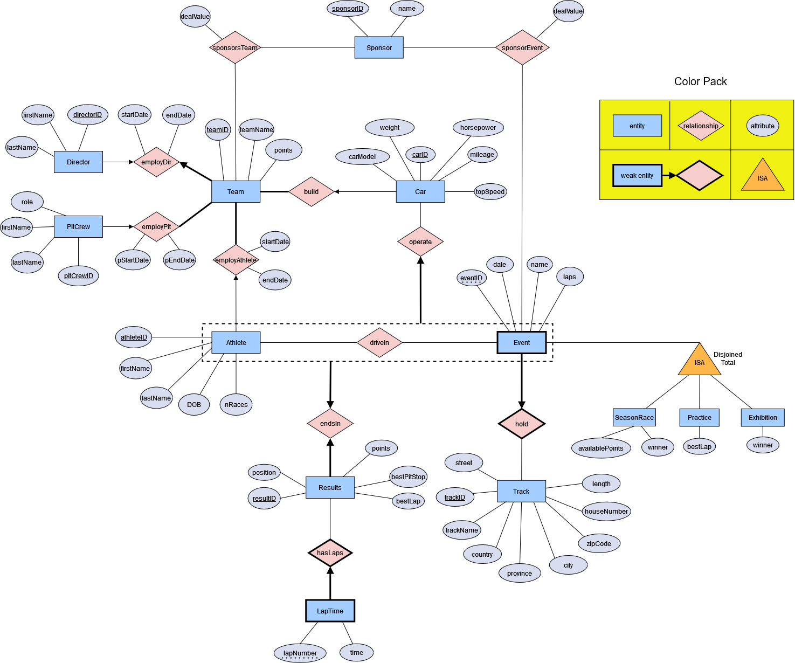

Projects | Formula 1 Database Management System
Project files available upon request -
Queries Implemented
The Formula 1 Racing Database Application is designed to support users interested in betting on Formula 1 races by providing essential data on athletes, teams, and race history. It includes information on individual athletes, their teams, car specifications, track times, and past race results. Users can navigate this data, compare performance, and access historical race information to inform their betting decisions. The relational database structure supports complex queries, ensuring data consistency and meaningful insights.
The application features a Java Swing GUI that allows users to interact with the database effectively, enabling them to view detailed information, update records, and perform queries. Built using Java with JDBC and Oracle Database, the application prioritizes reliability and scalability. It includes referential integrity and well-defined data constraints to maintain data quality, making it a useful tool for Formula 1 enthusiasts and betting professionals.
Questions Addressed
- How can I create and execute custom SQL queries using JDBC to retrieve specific athlete and race information?
This question focuses on learning how to construct and execute various SQL queries to extract relevant data from the database, allowing users to search for and compare athlete statistics effectively.
- What techniques can be employed to ensure data integrity and enforce referential constraints in an Oracle Database when using JDBC?
This question explores the implementation of data integrity measures, such as setting up foreign key relationships and constraints within the database schema, ensuring consistent and reliable data throughout the application.
- How do I implement CRUD (Create, Read, Update, Delete) operations in a Java Swing GUI using JDBC to manage the Formula 1 racing data?
This question addresses the development of a user-friendly interface that allows users to interact with the database, enabling them to add, modify, or remove data while ensuring seamless communication between the GUI and the underlying database.
Database Specification
- Benefits: Storing information in a relational database simplifies retrieval, making it easy for users to find relevant data about athletes and races.
- Functionality: Tracks information related to Formula 1 racing, such as car details, sponsorships, and race outcomes. Users can view, insert, update, and delete data via a Java Swing-based GUI.
- Technology Stack: Java (JDBC) and Oracle Database.
Implementation Details
- ER Diagram: Models entities like athletes, teams, races, and sponsors.
- SQL Script: The
F1_DBscript.sql script can be run independently on student servers or within IntelliJ IDEA Ultimate to create and populate the database.
-
Schema Changes:
- Changed data type for
time from TIME to FLOAT due to Oracle limitations.
- Added constraints for referential integrity (e.g., foreign key dependencies).
- Removed some total participation requirements and used alternative methods for constraints, as Oracle does not support certain required assertions.
